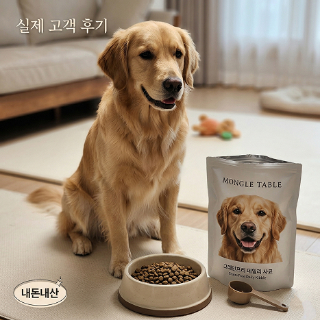
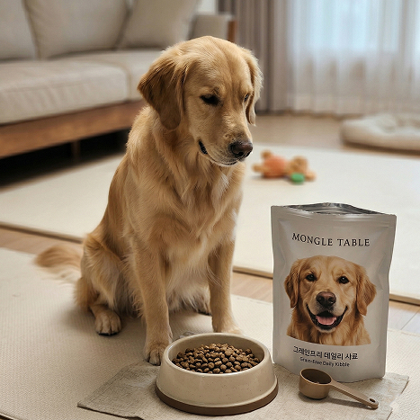
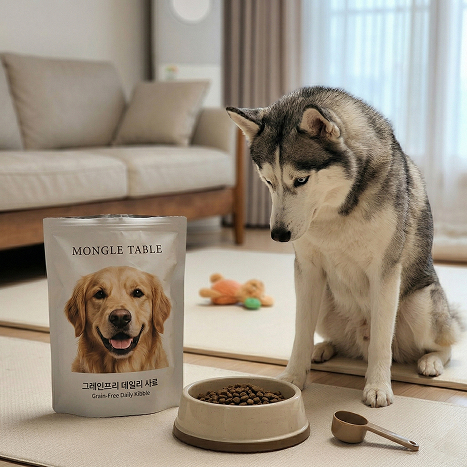
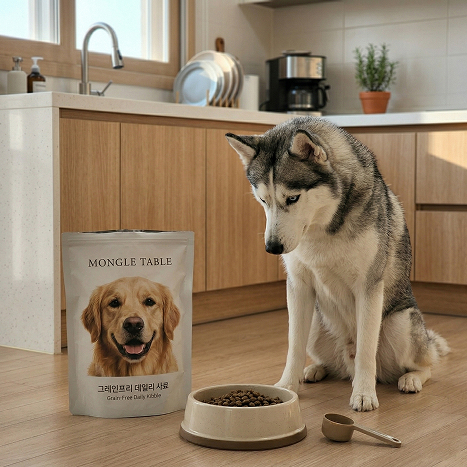
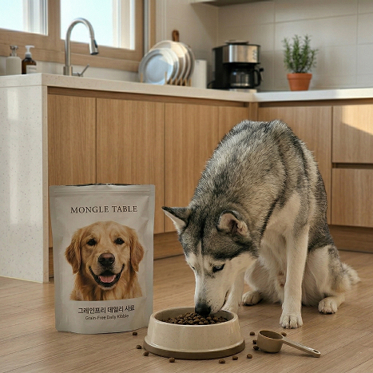
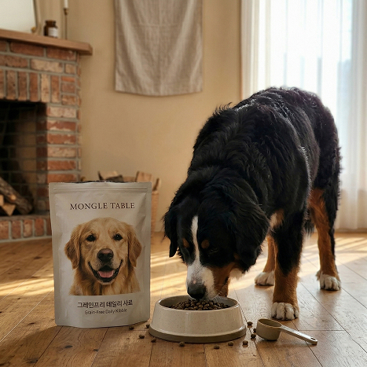
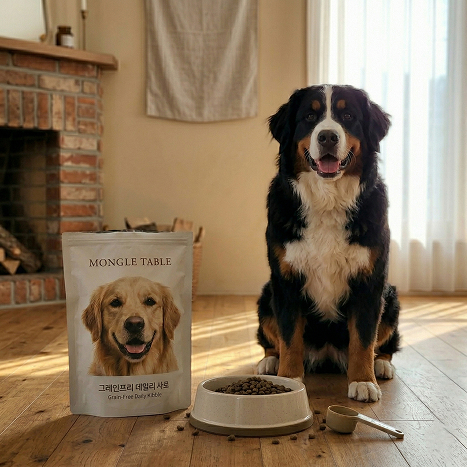
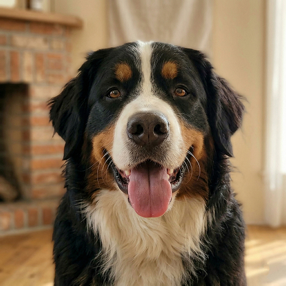

많이 찾는 제품
영양성분
그레인프리 데일리 사료
알러지 유발 가능성을 낮추고 육류 본연의 영양을 담은 고단백 식단입니다.
| 영양 성분 항목 | 보증 함량 |
|---|---|
| 조단백질 (Crude Protein) | 28.0% 이상 |
| 조지방 (Crude Fat) | 14.0% 이상 |
| 조섬유 (Crude Fiber) | 5.0% 이하 |
| 조회분 (Crude Ash) | 9.0% 이하 |
| 칼슘 (Calcium) | 1.0% 이상 |
| 인 (Phosphorus) | 0.8% 이상 |
| 수분 (Moisture) | 10.0% 이하 |

리뷰
happy_paws_01
2026.03.15

알레르기 걱정 끝! 눈물 자국이 눈에 띄게 줄었어요.


우리 집 골든리트리버가 피부가 워낙 예민해서 사료 고를 때마다 정말 고민이 많았거든요. 기존에 먹던 사료는 곡물 성분 때문인지 발을 자주 핥고 눈물 자국도 심했는데, 이 그레인프리 사료로 바꾸고 나서 확실히 긁는 횟수가 줄어든 게 보여요. 알갱이 크기도 대형견이 씹어 먹기에 딱 적당하고, 무엇보다 기호성이 너무 좋아서 밥시간만 되면 꼬리를 치며 기다립니다. 변 상태도 아주 건강하고 냄새도 심하지 않아서 대만족 중이에요. 다 먹으면 무조건 재구매할 예정입니다!
doggy_chef_koo
2026.03.20
까다로운 입맛의 강아지도 순삭하는 '마법 사료'네요.



사료를 워낙 가리는 편이라 입맛에 안 맞으면 입도 안 대는 아이인데, 몽글 테이블 사료는 봉투를 뜯자마자 맛있는 냄새가 나는지 관심을 보이더라고요. 첫날부터 남김없이 한 그릇 뚝딱 비워내는 걸 보고 정말 놀랐습니다. 성분표를 보니 단백질 함량도 높고 불필요한 곡물이 빠져 있어서 안심하고 급여할 수 있을 것 같아요. 사료 패키지도 지퍼백 처리가 꼼꼼하게 되어 있어서 마지막까지 신선하게 보관할 수 있다는 점이 마음에 쏙 듭니다. 영양 균형이 잘 잡힌 느낌이라 믿음이 가네요.
daily_mongle
2026.03.22
가성비와 품질을 모두 잡은 데일리 사료의 정석!



매일 먹이는 사료라 성분만큼이나 가격대도 무시할 수 없는데, 이 제품은 품질 대비 가격이 합리적이라 꾸준히 먹이기 좋습니다. 그레인프리 제품들은 보통 가격대가 높은 편인데, 이 정도 퀄리티에 이 구성이면 집사 입장에서 아주 감사하죠. 사료 알갱이가 너무 기름지지 않아서 손으로 만져봐도 깔끔하고, 아이 모질이 전보다 훨씬 윤기 나고 부드러워진 것 같아 뿌듯합니다. 배송도 빠르고 포장 상태도 깔끔해서 주변 견주분들에게도 추천해주고 싶은 사료입니다. 다음번엔 대용량 구성도 있었으면 좋겠어요!